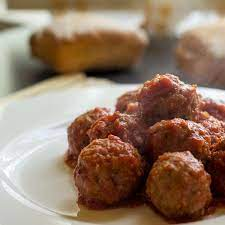

Albondigas

Descripcion
Aprende a preparar las clasicas bolitas de carne que preparaba tu madre/abuela. Siguiendo
esta receta pronto estaras disfrutandolas, ya sea como aperitivo, en salsa o como mas te gusten.
Ingredientes
- 500 gr de carne molida
- 2 huevos
- 1 cebolla
- perejil
- Pan rallado
- Especias y sal a gusto
Pasos:
- Picar finamente la cebolla y el perejil.
- En un recipiente mezclar la carne, los huevos, la cebolla, el perejil y las especias, salar a gusto.
- Dar forma a las albondigas y luego pasarlas por el pan rallado.
- Ahora puedes cocinar las albondigas en salsa o hacerlas fritas.